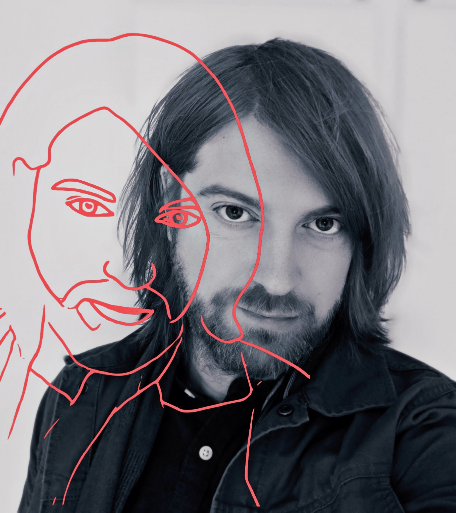

En snabb text om mig själv, fyller på lite najsa ord för att jag
skriver vad jag ser. Oj, tittar ut genom fönstret. Något kallt idag,
inte samma fina solsken som det var igår vid den här tiden.
Men ändå, kanske dags för ett break för att ta en löpartur runt
årstaviken. Gäller att passa på innan folk börjar att gå på
lunchpromenad.